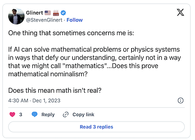
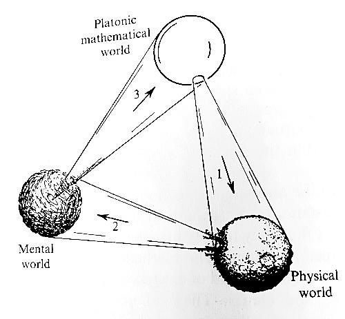

In my earlier post Do sets exist?, I introduced two ideas about this, personified by Plato and Aristotle. This tweet:

glinert.png66.9 KB Introduced me to the term mathematical nominalism. This Stanford Plato article, Nominalism in the Philosophy of Mathematics, has way more than you wanted to know, but I'll summarize here:
Platonism is the view that mathematical objects exist in their own ideal world, and the physical representations of mathematical objects that we work with are like shadows on the cave wall, imperfect projections of these Ideal Forms.
Nominalism is the view that those Ideal Forms may not exist, or don't need to exist.
Again, who cares? Well let's break it down by the five problems that these competing philosophies have to deal with:
The epistemological problem of mathematics (how do we come to know about mathematical objects?)
The problem of the application of mathematics (why is mathematics so unreasonably effective?
The problem of uniform semantics (on the meaning of mathematical statements)
The problem of taking mathematical discourse literally (Platonists don't have this problem)
The ontological problem (about the independent existence of the mathematical objects and their true nature)
Platonism solves 2,3 & 4 better, but Nominalism solves 1 & 5 better. You can visit the Stanford Plato article for more depth, but this is a good summary of the philosophical divide here.
Back to the tweet:
If AI can solve mathematical problems or physics systems in ways that defy our understanding, certainly not in a way that we might call "mathematics"...Does this prove mathematical nominalism?
If I understand nominalism, the answer is no.
Assume for a moment that an LLM or some other AI model solves a physics problem in some way that mathematicians prove is not expressible in any category of mathematics. (Stronger than the OP was assuming, but let's make the reasoning easier since it's 6am right now).
If this were true, then it would mean that the physical world is not isomorphic to any mathematical structure. The Platonists would take this to mean that the cave wall (our physical world) is not fully covered by this cone in the below diagram (from Penrose's Road to Reality):

math-mind-matter.jpg64.2 KB
The revised image would have some part of the bumpy Physical world sphere being outside the shadows. That would mean Plato's cave had parts of it with no shadows.
Now, the nominalists would probably yawn and say, "look we've got no new information", we already expected this.
So since both camps would have their own interpretation of this scenario, it would not prove nominalism.
Okay, what would prove nominalism? If I knew, I would immediately ascend the throne to become Philosopher King and I could decisively win this ancient battle of ideas.
I think nominalism has some of the same epistemological simplicity as analytic idealism has relative to materialism. This post has been about cone 1 (in the diagram), and analytic idealism vs materialism is about cone 2. In the context of this diagram, materialists think the arrow of causality points from the Physical world to the Mental world. Idealists believe it points backwards, and Dualists think it goes both ways. I'll get into that in another post, but for now let's return:
Do mathematical objects exist?
I think so, because 2 is so easily solved by Platonism. Why is mathematics so unreasonably effective? Because the physical world is an imperfect image of perfect forms. But I welcome debate on this topic, as I just learned what nominalism was called this morning, from a tweet.
This is not philosophical advice, please do philosophy responsibly.